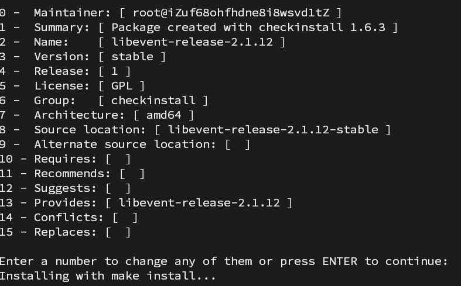
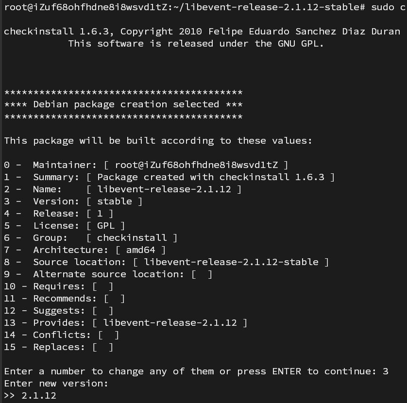
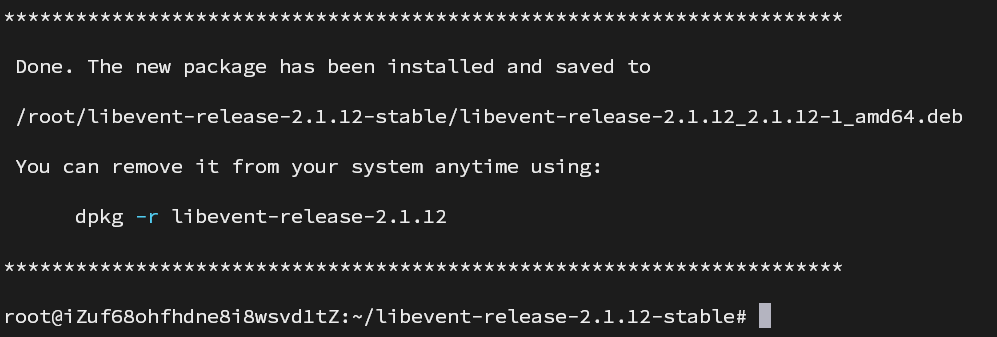
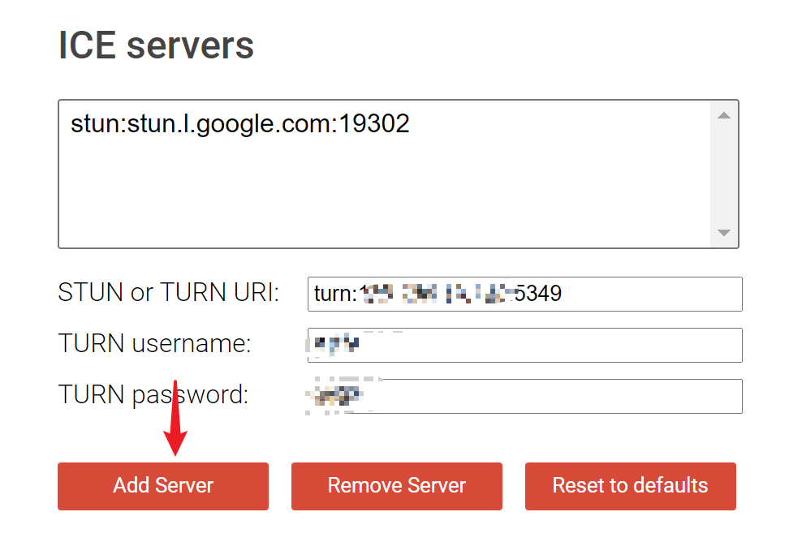
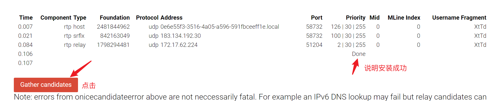
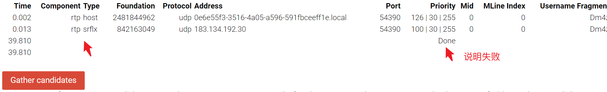

在debian中使用Coturn创建和配置自己的STUN/TURN服务器
在debian中使用Coturn创建和配置自己的STUN/TURN服务器
关键词：coturn，stun，turn
安装Coturn一般分为两步。
第一步要查看安装的openssl版本，然后安装libevent。
第二步是安装Coturn。
安装libevent
相关地址：
- https://github.com/libevent/libevent
- https://codechina.csdn.net/mirrors/libevent/libevent
注意
libevent与openssl的版本对应关系如下：
| libevent | openssl |
|---|---|
| 2.1.x | 1.1 |
| 2.0.x | 1.0 |
如果你的openssl是1.1版本及以上，请安装2.1.x版本的libevent；
如果你的openssl是1.0版本及以上，请安装2.0.x版本的libevent。
查看openssl版本
1 | openssl version |
1 | root@iZuf68ohfhdne8i8wsvd1tZ:~# openssl version |
这里使用2.1.12的版本进行安装。
下载2.1.12版本libevent
1 | wget https://codechina.csdn.net/mirrors/libevent/libevent/-/archive/release-2.1.12-stable/libevent-release-2.1.12-stable.tar.gz |
安装openssl依赖
1 | sudo apt update && sudo apt install libssl-dev -y |
编译
1 | tar xvf libevent-release-2.1.12-stable.tar.gz |
打包
1 | sudo apt install checkinstall -y |

这里需要把3 - Version: [ stable ] 修改成版本号，否则后面安装不成功。

安装成功

安装Coturn
1 | sudo apt install coturn -y |
可参考：https://www.webrtc-experiment.com/docs/TURN-server-installation-guide.html#coturn
TURN数据库配置
增加用户：增加普通long-term TURN用户，用于WebRTC的登陆。
1 | sudo turnadmin -a -u <username> -r <realm> -p <password> |
注意：
- 如果不用默认db也可以通过命令行配置需要使用的db文件路径
- 需要sudo否则无法写入db文件，查询为空，或者给db文件改权限。
- 如果没有安装sqlite并不会报错，只是查询为空。
安装sqlite
1 | sudo apt install sqlite3 libsqlite3-dev |
如果报错：turnadmin: error while loading shared libraries: libmysqlclient.so.21
需要安装libmysqlclient-dev：
1 | sudo apt-get install libmysqlclient-dev |
查看当前的普通用户
1 | turnadmin -l |
删除普通用户
1 | turnadmin -d -u <username> -r <realm> |
修改TURN服务配置文件
配置文件路径为/etc/turnserver.conf
先将原来的默认配置复制一份，然后在添加新的配置文件。
1 | sudo mv /etc/turnserver.conf /etc/turnserver.conf.bak |
一些常用的配置：
其中cert和pkey的文件地址请根据下一步使用openssl生成证书和密钥的文件路径来修改你的配置
1 | # 本地监听外网的网卡设备，默认eth0 |
使用openssl生成证书和密钥
tls加密通信需要密钥，可以用openssl工具生成：
1 | sudo mkdir ssl && cd ssl |
1 | openssl req -x509 -days 1000 -newkey rsa:2048 -keyout ./key.pem -out ./cert.pem -nodes |
重启服务
配置文件修改完毕以后需要重启一下服务以便使配置文件生效。
1 | sudo service coturn restart |
配置docker
1 | docker run -it --user $(id -u):$(id -g) \ |
测试是否成功搭建
https://webrtc.github.io/samples/src/content/peerconnection/trickle-ice/


